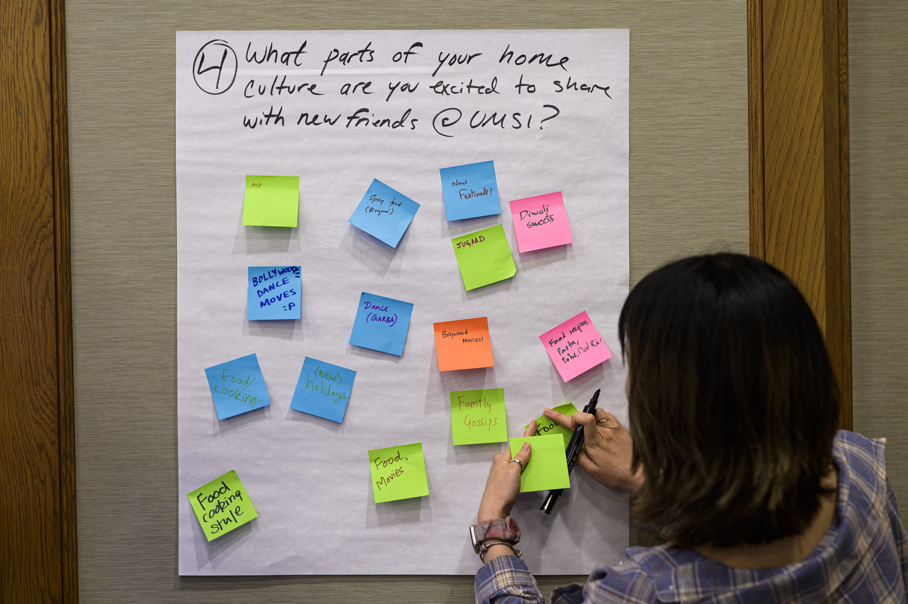
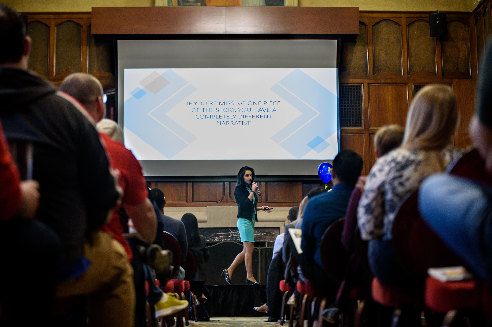
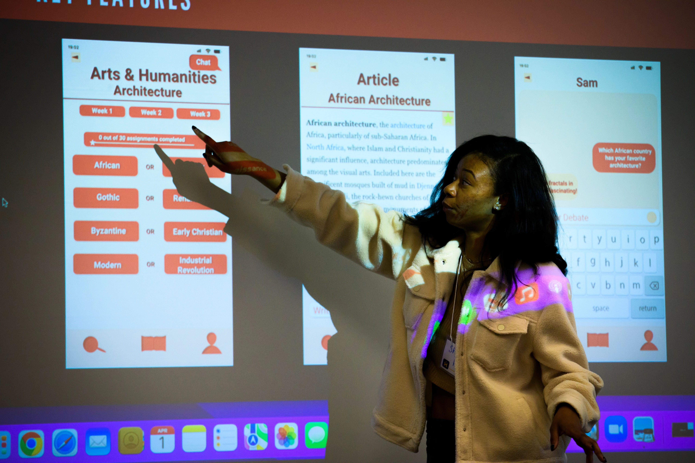

Your Path to Career Success Starts Here
Job readiness is essential for turning education into meaningful employment, and the
University of Michigan School of Information (UMSI) is committed to preparing students
for success in every stage of their career journey. Through its Career Development Office,
UMSI offers a wide range of resources including personalized cover letter reviews,
portfolio-building
guidance, interview preparation tools, and access to exclusive job and internship listings via UMSI
CareerLink. Whether you're refining your resume, practicing mock interviews, or exploring new
opportunities, UMSI equips you with the skills, support, and confidence needed to navigate today’s
job market and launch a successful career.
Cover Letters
"Are Cover Letter Worth the Time?"
Yes!
Cover letters are important because they let you personalize your application,
highlight how your skills match the job, and show strong communication skills.
They also help you stand out from other candidates and explain things your résumé
can’t, like career changes or employment gaps.
*Take advantage of a cover letter submission
Cover Letter Best Practices
Length and Layout
- One page, single-spaced
- Margins: 0.5 inches
- Font: Times New Roman, Arial, or Verdana
- Size: 10, 11, or 12 pt
- Alignment: Left-aligned and justified
- Spacing: Use returns between paragraphs
Header
- Use the same name and contact info from your résumé/li>
- Add the date
- Include the recipient’s full name, title, department, and address (if available)
Greeting
- Address a specific person if possible
- Use: Dear [Full Name]: or Dear [Title] Hiring Manager:
- Avoid: To Whom It May Concern, Dear Sir/Madam
Opening Paragraph
- Brief intro to who you are and why you’re interested
- State position title and how you found it
- Mention your degree, relevant coursework, and motivation
- Include 2–3 key qualifications to guide the rest of the letter
Body Paragraph(s)
- Use 2–3 focused paragraphs
- Each paragraph should:
- Highlight a specific experience or skill
- Use the STAR format (Situation, Task, Action, Result)
- Quantify your impact when possible
- Directly tie the experience to the role
Conclusion
- Reaffirm your interest and fit
- Invite further conversation (e.g. interview)
- Thank the reader
- Close with: Sincerely,
- Include first and last name
Portfolios

What is a Portfolio? A portfolio is a curated collection of 3-5 projects,
often presented as a website. It showcases your skills, process(es), and problem-solving
abilities. Your portfolio is an opportunity to highlight your growth, creativity, and unique
approach to solving problems. A strong portfolio emphasizes your thinking process, storytelling,
>nd the real-world impact of your work. Employers and clients use portfolios to assess your
qualifications and determine if you’re a good fit for their team or project.
[NOTE] Portfolios are typically required for User Experience (UX) Design applications.
Components of a Portfolio:
Home Page
✅ About Me Page
✅ Case Studies
☑️ Summary/Overview
☑️ Timeline
☑️ Your Role
☑️ Tools, Methods, and/or Skills
☑️ Context/Background
☑️ Problem Statement
☑️ Question(s)
☑️ Research
☑️ Personas
☑️ Design Process
☑️ Final Design/Outcome
☑️ Lessons Learned/Reflection/Conclusion
✅ Resume (Hyperlink to a separate PDF tab of resume)
✅ LinkedIn (Hyperlink to a separate tab with your personal LinkedIn account)
✅ [Optional] Art, Graphic Design, & Additional Work Section
Resources Based on Each Pathway
User Expereince(UX): Typically required for applications
Example Portfolios:
- https://www.gracegarmo.com/(BSI alum)
- https://www.joannehuangdesign.com/ (MSI alum)
- https://www.preciousaghaeze.com/
Data: Hardly required for applications
Example Portfolios:
- https://cmparent8.wixsite.com/portfolio (BSI alum, MSI student)
- https://www.claudiatenhoope.com/(MSI alum)
- https://jameskle.com/data-portfolio
Library/Archives: Not typically required for applications
Example Portfolios:
Health Informatic(MHI): Not typically required for applications
Example Portfolios: